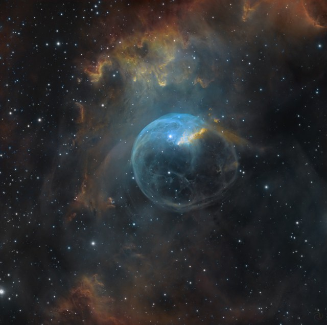

Латинское название: Cygnus
Лебедь появился на небе в благодарность за то, что в этом образе Зевс добился любви Леды (или, быть может, Немезиды, есть разные версии на этот счет). В результате Леда снесла яйцо, из которого вылупились Близнецы Диоскуры Кастор и Полидевк, а может быть и Елена с Клитемнестрой.
Лебедь X-1. Рентгеновский источник, один из первых открытых астрономами, когда они взялись за это дело - исследование неба в рентгеновских лучах.
Источник X-1 - один из уверенных кандидатов на роль черной дыры. Между прочим, известнейший физик современности Стивен Хокинг, скептически поспорив со своим коллегой Кипом Торном по поводу природы этого объекта, признал в 90 году, что кроме как черной дырой X-1 ничем не может быть, и выплатил причитающиеся по пари призовые.
Если вы считаете, что обычный астроном-любитель не может совершить открытие - вот обратный пример: очень слабая, но очаровательная туманность Пузырь была обнаружена именно любителем!
